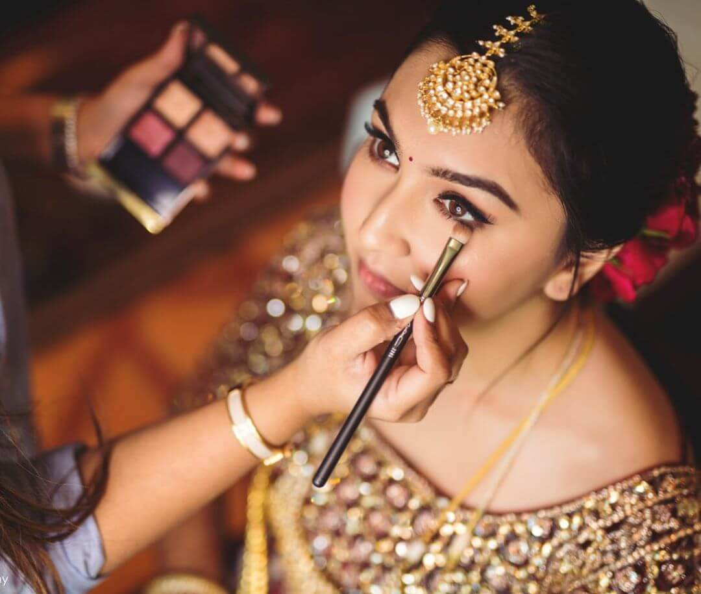
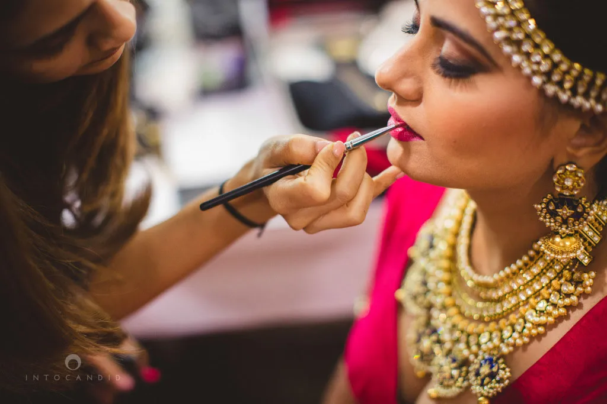
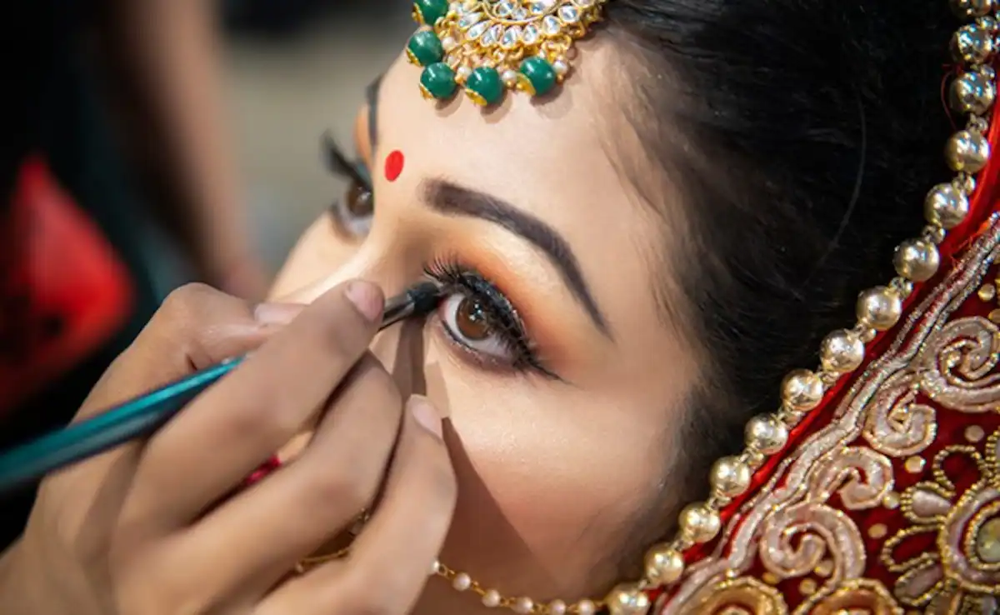
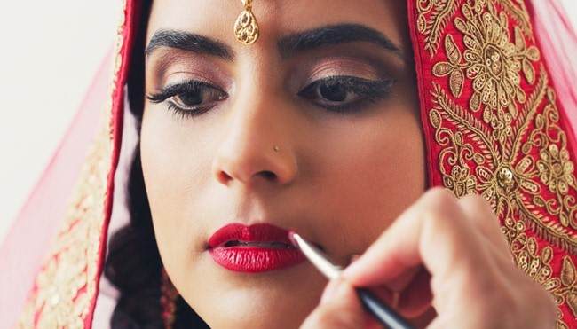
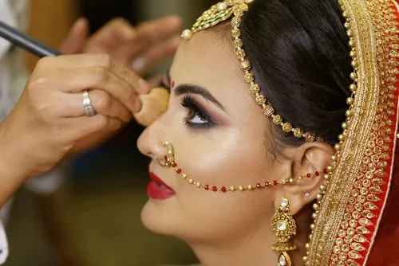

Subscription
Bridal-Makeup



- Step 1: Cleanse & Tone
- Step 2: The Prep Step
- Step 3: For Luminous Base
- Step 4: Colour Correct
- Step 5: Conceal
- Step 6: For That Picture-Perfect Base
- Step 7: For The Perfect Arch
- Step 8: Prime Those Lids
- Step 9: To Nail That Natural Eye Makeup
- Step 10: To Nail An Out-Out Look
- Step 11: Set With Powder
- Step 12: Curl
- Step 13: Apply Mascara

- Step 14: Apply Falsies

- Step 15: Contour For Sculpted Look
- Step 16: For Flushed Cheeks
- Step 17: Highlight
- Step 18: To Ace The Pout Line Your lips
- Step 19: Apply That Head-Turning Lipstick Hue
- Step 20: For Skin That Freakin' Glow